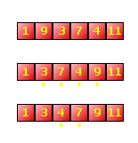

| << Spis Strona g³ówna Sortowanie b¹belkowe >> |
Sortowanie to bardzo czêsto pojawiaj¹cy siê problem. Nie jest to nic wielkiego, jeœli mamy posortowaæ jak¹œ malutk¹ tablicê - wystarczy wtedy stworzyæ drug¹, pomocnicz¹ tablicê, po czym kolejno wyszukiwaæ najwiêkszy (lub najmniejszy) element pierwszej tablicy, wpisywaæ go do tablicy pomocniczej, po czym usuwaæ z pierwszej tablicy.
Gorzej, jeœli sortujemy tablicê bardzo du¿¹. Wtedy utworzenie tablicy pomocniczej bêdzie siê wi¹za³o z du¿¹ strat¹ pamiêci operacyjnej. Jak posortowaæ tablicê bez zu¿ywania dodatkowego miejsca w pamiêci?
Najprostszym sposobem jest sortowanie przez zamianê parami, zwane równie¿ metod¹ naturaln¹ (bo nie zawiera cholesterolu ;-)). Zasada jest raczej banalna: bierzemy kolejne dwa elementy tablicy i porównujemy ze sob¹. Jeœli drugi element jest wiêkszy od pierwszego, to zamieniamy je miejscami (to oczywiœcie odnosi siê do przypadku, jeœli chcemy posortowaæ elementy w kolejnoœci rosn¹cej, w przeciwnym wypadku s³owo "wiêkszy" nale¿y zast¹piæ przez "mniejszy"). Ka¿d¹ tak¹ zamianê liczymy w specjalnej zmiennej. Jeœli dojdziemy do koñca tablicy i licznik zamian wynosi 0, to znaczy ¿e tablica jest uporz¹dkowana. Jeœli licznik jest wiêkszy od zera, to rozpoczynamy przegl¹danie par od pocz¹tku, i tak a¿ do skutku.
Najlepiej widaæ to na konkretnym przyk³adzie na rysunku. Mamy tu tablicê 6 liczb, które chcemy uporz¹dkowaæ rosn¹co. Pierwsza i ostatnia s¹ na w³aœciwych miejscach, ale œrodkowa czwórka z ca³¹ z³oœliwoœci¹ usadowi³y siê nie tam, gdzie trzeba. No to my j¹ tu zaraz... ;-) Najpierw porównujemy pierwsze dwie liczby, czyli: 1 i 9. Poniewa¿ 1 < 9, to nie robimy nic i przechodzimy do nastêpnej pary (9 i 3). Tutaj ju¿ nie jest tak ró¿owo: kolejnoœæ jest niew³aœciwa, wiêc zamieniamy te dwie liczby parami. Idziemy dalej: teraz na trzeciej pozycji jest nie 3, lecz 9 (zamieniliœmy), wiêc nasza nastêpna para to 9 i 7. Znów nieporz¹dek, znów zamiana. Kolejna para to 7 i 4 - zamieniamy. Wreszcie - 7 i 11, kolejnoœæ OK, nic nie robimy. W ten sposób doszliœmy do sytuacji, opisanej na rysunku jako "I przejœcie". By³y w sumie 3 zamiany, które objê³y ³¹cznie 4 elementy tablicy (zaznaczone na rysunku ¿ó³tymi kropkami).

Teraz sprawy wygl¹daj¹ du¿o lepiej, ni¿ na pocz¹tku: wszystkie liczby s¹ na w³aœciwych pozycjach, tylko 4 siê gdzieœ zab³¹ka³a. Zerujemy wiêc licznik zamian i powtarzamy sprawdzanie parami od pocz¹tku: 1 i 3 - OK, 3 i 7 - OK, 7 i 4 - Ÿle. Zamieniamy, jedziemy dalej. 7 i 9 - OK, 9 i 11 - OK, drugie przejœcie zakoñczone. By³a tylko 1 zamiana. Jak widaæ, tablica jest ju¿ uporz¹dkowana, ale algorytm przecie¿ o tym nie wie. Nie ma rady, zerujemy licznik zamian i znowu przegl¹damy pary. Tym razem dojdziemy do samego koñca bez dokonania jakiejkolwiek zamiany, bo wszystko ju¿ jest na w³aœciwym miejscu. Licznik zamian wynosi 0, wiêc koñczymy algorytm. Hurrra, koniec! ;-)
Wiemy ju¿, jak cholerstwo dzia³a, czas na implementacjê. Za³ó¿my, ¿e nasza tablica bêdzie typu WORD. Robimy funkcjê o nazwie SortArray (czy jak tam j¹ sobie nazwiesz). Bêdzie ona typu void (nie musi nic zwracaæ) i bêdzie mia³a 2 argumenty: Tab - wskaŸnik do tablicy (typu WORD), któr¹ sortujemy oraz n - liczba elementów tablicy:
|
void SortArray(WORD* Tab, DWORD n) { } |
Bêdziemy z pewnoœci¹ potrzebowali jednej zmiennej jako licznika dokonywanych zamian - powinna ona byæ tego samego typu, co liczba elementów tablicy, czyli w tym przypadku DWORD. Ca³oœæ realizujemy w pêtli do-while, w której warunkiem wykonywania bêdzie ró¿na od 0 wartoœæ licznika zamian (tutaj zmienna licznik).
|
void SortArray(WORD* Tab, DWORD n) { DWORD licznik; do while(licznik); } |
Ka¿de kolejne przejrzenie par bêdzie siê odbywa³o w pêtli for. Zauwa¿, ¿e liczba przegl¹danych par za ka¿dym razem wynosi n-1. Przegl¹danie polega oczywiœcie na umieszczeniu odpowiedniej instrukcji if. Jeœli warunek w if-ie jest spe³niony, dokonujemy zamiany liczb w aktualnej parze (do tego potrzebujemy pomocniczej zmiennej temp, która musi byæ tego samego typu, co elementy tablicy, czyli tutaj WORD). Ka¿da zamiana powoduje zwiêkszenie wartoœci zmiennej licznik o 1. Zauwa¿, ¿e przed ka¿dym przejrzeniem par (czyli tu¿ przed pêtl¹ for) musimy wyzerowaæ tê zmienn¹. Koñcowy kod wygl¹da tak:
|
void SortArray(WORD* Tab, DWORD n) { DWORD licznik; WORD temp; do { licznik = 0; for(DWORD i=0; i<n-1; i++) if(Tab[i] > Tab[i+1]) { temp = Tab[i]; Tab[i] = Tab[i+1]; Tab[i+1] = temp; licznik++; } } while(licznik); } |
Oczywiœcie powy¿sz¹ funkcjê SortArray mo¿na dostosowaæ do innego ni¿ WORD typu tablic, wystarczy pozmieniaæ typy zmiennych Tab oraz temp (ewentualnie n i licznik, jeœli trzeba, chocia¿ typ DWORD powinien wystarczyæ). A ju¿ najlepiej skorzystaæ z szablonów funkcji.
Aby zmieniæ kolejnoœæ sortowania (na malej¹c¹), wystarczy zamiast operatora > daæ <.
Jest to najprostsza metoda sortowania, ale niekoniecznie najwydajniejsza. Jeœli chcesz przyspieszyæ dzia³anie funkcji sortuj¹cej, zapoznaj siê z algorytmem sortowania b¹belkowego.
| << Spis Strona g³ówna Sortowanie b¹belkowe >> |